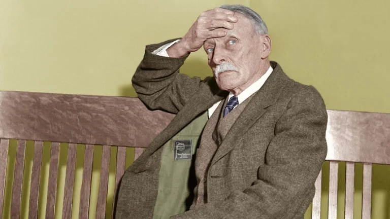

La pavorosa historia de Albert Fish

Albert Fish, en un foto coloreada, poco antes de que sus crímenes fueran descubiertos
Hamilton Howard Albert Fish tenía 33 años -la mitad de los que viviría-, cuando una cámara fotográfica capturó su primera imagen: un atildado caballero de bien cortado bigote, buena ropa y bombín a la moda coronando su cabeza. Primera imagen y primera detención. Cargo: malversación de fondos.
Apenas una tenue sombra, un pecado venial preludio de su aterradora historia y de los bautismos de la prensa: El Hombre de Gris, El Hombre Lobo de Wysteria, El Vampiro de Brooklyn, El Maníaco de la Luna…
Llegó a este mundo el 19 de mayo de 1870 en Washington D.C. Eligió llamarse "Albert" después de la muerte de uno de sus tres hermanos, pero también para aventar el sobrenombre que le endilgaron en el orfanato donde pasó varios años de su infancia desde apenas sus cinco recién cumplidos: "Ham and Eggs" (huevos con jamón).
Nació con estigma: muchos de los Fish sufrieron enfermedades mentales y arrebatos místicos. Su padre, el viejo Fish, capitán de barco fluvial, murió de infarto en 1875, y su madre, casi medio siglo menor que el marido y sin un dólar, no tuvo otra opción que el orfanato: un destino de paredes grises, castigos, burlas, oprobio, pero también de un siniestro descubrimiento: Albert sentía placer ante el dolor físico, y los golpes le provocaban prematuros orgasmos.
Recién en 1879 su madre consiguió un empleo en el gobierno y pudo sacarlo del orfanato. Pero ya estaba marcado a fuego. A los 12 años empezó una relación homosexual con el hijo de un telegrafista algo mayor, y comenzó a esconderse en los baños y las piscinas públicas "porque me excitaban sus olores y sonidos", relataría en algunas cartas.
Pero fue aún más allá: se tornó adicto a la urofagia y a la coprofagia -ingestión de orina y excremento-, y a sus 20 años, radicado en Nueva York, se convirtió en prostituto y obsesivo violador de adolescentes.
Su madre imaginó que un matrimonio lo alejaría de ese repulsivo mundo, y en 1898 lo impulsó a casarse con un mujer nueve años menor.
El arreglo pareció funcionar y enmendar los desvíos de Albert. Tuvieron seis hijos: Albert, Anna, Gertrude, Eugene, John y Henry.
"En esos años fue un buen padre y esposo", recordó un detective que debió seguir sus pasos casi hasta la degradación y el derrumbe finales, y que en 1903 lo arrestó por malversación de fondos: delito que purgó en la prisión de Sing Sing, Ossining, estado de Nueva York, y temible no sólo por su durísimo régimen interno: también por ser la primera del país en instalar la silla eléctrica.
Resulta ocioso aclarar que las relaciones sexuales entre Albert y los presos fueron legendarias.
Sin embargo, su período marital y paterno, más allá de su escenario de normalidad, no fue más que un telón de fondo paralelo.
Bajo la apariencia de un inocente pintor de brocha gorda en casas particulares… ¡violó a no menos de un centenar de niños, varones, que no superaban los 6 años de edad!
Y por si poco fuera, multiplicó sus visitas a burdeles, exigiéndoles a las prostitutas que lo azotaran sin piedad, hasta sangrarlo, al mismo tiempo que encontró fascinante la castración, y hasta la intentó en un retardado mental que logró huir a tiempo.
Hacia 1917, bordeando ya sus 47 años, su mujer lo abandonó por otro hombre, y Albert agregó al espanto de su vida otros datos de locura: juraba oír voces: entre ellas, las del apóstol Juan, que le ordenaba envolverse en una alfombra… se ignora con qué fin.
Pero cuanto hasta entonces había ocurrido apenas soslayaba el infierno.
A sus 60 años atacó a un débil mental -Thomas Bedden- en Delaware, y mató a puñaladas a un niño negro, también retrasado mental, en Georgetown. Dos primeros pasos. Obertura de una ópera sangrienta, trágica, apenas imaginable aun por los más endurecidos policías de una novela de Raymond Chandler.
Su obsesión por el pecado
Esa obsesión por el dolor le llevó a autoinfligirse castigos y mutilaciones. Se clavaba alfileres en la pelvis y en los genitales -en una radiografía hallaron casi una docena-, rebozaba su cuerpo desnudo sobre rosales repletos de espinas y hasta le pillaron masturbándose en su habitación mientras se golpeaba la espalda con un palo con clavos. La sugestión que le provocaban aquellos actos le hacía obnubilarse con la idea del pecado. Sufría todo tipo de alucinaciones religiosas y sólo expiaba sus culpas mediante el castigo físico. Aquel dogma lo llevó al extremo afirmando en múltiples ocasiones ser Jesucristo o san Juan, y que el Todopoderoso era quien le ordenaba cometer dichos sacrificios humanos.
Los rayos X muestran alfileres y agujas en el cuerpo de Albert Fish.
Era lógico que las autoridades decidieran ingresarle en un centro psiquiátrico. Sin embargo, y aunque fue internado tres veces, le dejaban salir al no demostrarse que estuviese “loco”. Parece ser que la personalidad psicopática de carácter sexual que sufría Fish no era suficiente para mantenerlo en un centro. Además, le arrestaron en ocho ocasiones por cometer varias estafas, robos y enviar cartas obscenas a las mujeres que se anunciaban en los periódicos para buscar pareja.
La pequeña Grace
Una de sus predilecciones era buscar niños negros con los que practicar sus terribles fantasías sexuales. Sin embargo, la primera víctima que desapareció fue de raza blanca. Se trataba de un niño llamado Billy Gaffney que, el 11 de febrero de 1927, fue raptado por Fish mientras jugaba con otros dos amigos en la puerta de su casa. Cuando el más mayor se percató de que el pequeño no estaba, otro de los niños le contó que se lo había llevado el “coco”, un anciano de complexión delgada, con cabello y bigote gris. Ésa fue la descripción que dieron por primera vez del “abuelo asesino”. Jamás se encontró el cuerpo de Billy.Sin embargo, el único asesinato por el que se pudo juzgar a Fish fue el de Grace Budd, una niña de tan sólo diez años. Este crimen lo cometió gracias a su rostro aparentemente amable y pacífico, y, por supuesto, a su poder de convicción.
Grace Budd, víctima de Albert Fish
Tedd, el hermano mayor de la chiquilla, publicó un anuncio en el periódico en el que pedía una oportunidad laboral. El criminal lo leyó y acudió a la dirección familiar con la excusa de ofrecerle un puesto de trabajo. Fue allí donde conoció a Grace. Acabó obsesionándose con ella, así que urdió un plan para que sus padres accediesen a que lo acompañase a la fiesta de cumpleaños de su sobrina. Previamente, Fish había logrado establecer una buena relación con la familia Budd, con quienes compartió una mañana de charla y desayuno.
Los padres de Grace dieron el visto bueno y el abuelo les prometió que la tendrían de vuelta antes de las nueve de la noche. Jamás regresaron. A partir de ahí se inició una búsqueda desesperada por toda la región, pero no lograron dar ni con el paradero de la niña ni con el de su secuestrador.
La carta narrando el crimen
Seis años después de la desaparición de Grace y con las esperanzas ya rotas, la familia recibió una misiva de Albert Fish en la que les contaba qué ocurrió aquella tarde y qué hizo con su hija. Sus palabras dejaron en estado de shock a la madre y fue su hijo Tedd quien tuvo que terminar de leerla. Sin poder dar crédito a lo que habían leído, entregaron la carta a la policía. El contenido era aterrador:“Estimada señora Budd. En 1894 había hambruna en China. La carne de cualquier tipo costada entre uno y tres dólares por libra. Tan grande era el sufrimiento entre los pobres, que todos los niños menores de doce años eran vendidos como alimentos. Usted podía entrar a cualquier tienda y pedir un corte en filete o carne de estofado. El trasero de un chico o chica es la parte más dulce del cuerpo era vendida como chuleta de ternera a muy alto precio. Mi amigo el capitán John Davis, asistente en el barco Tacoma, regresó a Nueva York, robó a dos chicos de siete y once años, los llevó a su casa, los desnudó, los encerró en un armario, y los azotó varias veces por día para que su carne fuera más tierna. Primero mató al chico porque tenía el trasero más gordo. Cada parte de su cuerpo fue cocinada y comida excepto la cabeza, huesos e intestinos. El chico pequeño fue el siguiente. En aquel tiempo yo vivía en la calle 409 E 100 cercana a la derecha. Él me decía cuán buena era la carne humana, y decidí probarla.
El domingo 3 de junio de 1928 llamé a su puerta en la calle 15, 406 oeste. Llevaba queso y fresas, y almorzamos. Grace se sentó en mi regazo y me besó. Me propuse comérmela. Con el pretexto de llevarla a una fiesta, le pedí que le diera permiso, a lo que usted accedió. La llevé a una casa vacía que había elegido con anterioridad en Westchester.
Cuando llegamos, le dije que se quedara afuera. Mientras ella recogía flores, subí y me desnudé. Sabía que si no lo hacía podría mancharme la ropa con su sangre. Cuando todo estuvo listo, me asomé a la ventana y la llamé. Entonces me escondí en el armario hasta que ella estuvo en la habitación. Al verme desnudo, comenzó a llorar y trató escapar por las escaleras. La atrapé y me dijo que se lo diría a su mamá.
Primero la desnudé. ¡Cómo pataleó, arañó y me mordió! Pero la asfixié hasta matarla. Luego la corté en pequeños pedazos para poder llevar la carne a mi habitación. Guisé su rico y tierno trasero. Me llevé nueve días comerme su cuerpo entero. No la violé, aunque podría haberlo hecho si lo hubiera deseado. Murió virgen”.
Las confesiones
Durante el interrogatorio, el Vampiro de Brooklyn explicó con todo lujo de detalles qué había hecho con la niña. Afirmó que, tras matarla, le cortó la cabeza con un cuchillo y el resto del cuerpo con una sierra. “No soy un demente, sólo un excéntrico. A veces ni yo mismo me comprendo”, dijo. Se confesó autor de varios crímenes más. Por ejemplo, el de un niño de cuatro años al que flageló hasta la muerte cortándole las orejas, la nariz y los ojos, del que bebió su sangre y al que desmembró para después prepararse un estofado.También contó lo ocurrido con un vagabundo al que obligó a realizar actos sádicos, masoquistas y coprófagos durante varias semanas. Le acuchilló las nalgas para beber su sangre e intentó cortarle el pene, pero desistió ante los gritos del joven.
Durante el juicio, que se celebró el 11 de marzo de 1935, Albert Fish narró con una sonrisa en los labios todas las depravaciones que había realizado con unos cien niños. Y aunque aseguró haber matado al menos a quince, el único asesinato que la policía logró demostrar fue el de Grace Budd.
Diez días después de que diese comienzo la vista y que subieran al estrado diversos psiquiatras para explicar la despiadada personalidad de Fish, el jurado lo encontró culpable y el juez lo sentenció a morir en la silla eléctrica. La ejecución se produjo el 16 de enero de 1936.
Entre los periodistas allí congregados se encontraba el reportero del Daily News que escribió: “Sus ojos llorosos destellaron de alegría ante la idea de ser sometido a un calor mucho más intenso, comparado con el que usualmente se quemaba para satisfacer su lujuria. Preguntó si estaría consciente en el momento de su muerte. Dijo que era el único placer que le faltaba probar: su propia muerte, el delicioso dolor de morir”.
Tres minutos después de la descarga eléctrica, se certificó su muerte. Aquél fue su último escalofrío.